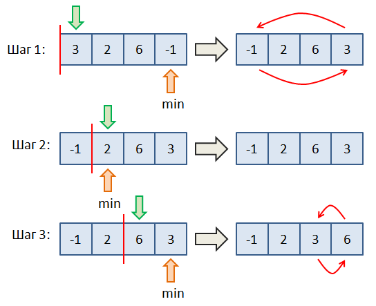

Большой подвиг 6. На вход программе подаются целые числа, записанные в одну строку через пробел. Необходимо их прочитать и сохранить в списке. Затем, выполнить сортировку выбором полученного списка по возрастанию (неубыванию). Идея алгоритма очень проста и проиллюстрирована на рисунке ниже.

Вначале мы рассматриваем первый элемент списка и ищем второй минимальный относительно первого элемента (включая и его). На рисунке - это последний элемент со значением -1. Затем, меняем местами первый и последний элементы. Переходим ко второму элементу списка и повторяем эту же процедуру, но относительно второго элемента (то есть, первый уже не рассматриваем). На рисунке минимальный элемент - это 2, поэтому менять местами здесь ничего не нужно. Переходим к 3-му элементы со значением 6. Относительно него находим минимальный элемент - это 3. Меняем их местами.
Вот идея алгоритма сортировки выбором. Реализуйте его для сформированного списка целых чисел. Результат выведите на экран в виде последовательности чисел, записанных в одну строчку через пробел.
Sample Input:
8 11 -53 2 10 11
Sample Output:
-53 2 8 10 11 11